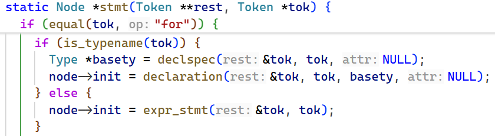
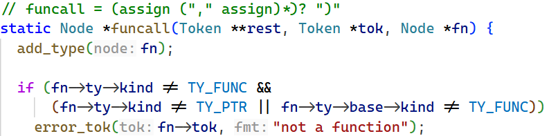

Closure
上回: Variable Capture
之前版本的局限
在之前的文章中，变量捕获是用一套临时方案实现的，它有如下局限：
- 用全局变量充当捕获槽：旧版为每个被捕获变量生成一个匿名全局变量（
new_anon_gvar），并在 lambda 表达式求值时通过一串 ND_ASSIGN 把外层变量写进去。全局变量只有一份，多次求值 lambda（例如在循环里）会反复覆盖它，导致所有闭包共享同一份捕获数据，无法实现"每次求值产生独立闭包"的语义；递归调用时也会互相覆盖。
- 解析状态是全局单例：旧版用
lambda_capture_enabled 和 lambda_captures 两个全局变量记录捕获状态，遇到嵌套 lambda 时需要手动保存/恢复，状态管理脆弱，也无法处理变量应被哪一层捕获的问题。
- 捕获来源单一：旧版只支持把"外层函数的局部变量"本身作为捕获来源（
new_var_node(cap->src)），对嵌套 lambda 中"由父级闭包捕获后再传递"的情况没有结构化支持。
- 没有真正的闭包类型：旧版 lambda 表达式仍然只是一个函数指针（
ND_ADDR），捕获通过全局槽隐式完成，无法把"函数 + 独立环境"作为一个整体传递。
这些局限促成了本次重构：引入真正的闭包类型，并把捕获值按值保存在每次求值独立的 environment block 中。
总体思路
本次实现把 "不捕获外层变量的 lambda" 和 "捕获外层变量的 lambda" 分开处理：
- 不捕获的 lambda：等价于一个普通函数，直接生成一个全局 lambda 函数，表达式类型退化为普通函数指针（function pointer），例如
int (*f)(int)，调用方式与普通函数指针完全一致。
- 捕获的 lambda：拥有一个闭包（closure）类型，写作
lambda <return-type> (<params>)。一个闭包值本质上是一个 16 字节的结构体 {fn, env}，其中 fn 指向编译器生成的全局 lambda 函数，env 指向创建该 lambda 时在栈上分配的捕获环境块（environment block）。捕获变量按值（capture by value）复制进环境块，因此每次求值 lambda 表达式都会得到一份独立的环境。
整个实现的脉络是：
- 语法分析阶段：新增闭包类型
lambda <return-type> (<params>)，并给捕获型 lambda 生成的函数额外添加一个隐藏参数 void *env（放在参数列表最前面，保存 environment block 的地址）；同时新增 ND_CLOSURE（lambda 表达式）与 ND_CAPTURED（被捕获变量的引用）两类 AST 节点。
- 代码生成阶段：求值一个捕获型 lambda 时，先在栈上通过
builtin_alloca 分配 environment block，把捕获值按值复制进去；再分配一个 16 字节的槽位（slot）保存 {fn, env}；调用闭包时把 env 作为隐藏的第一个参数传入（放在 %rdi）。
词法分析
解析闭包类型
新增 closure_type
我们新增闭包类型 lambda <return-type> (<params>)，一个闭包类型的变量实际包含两个指针 fn 和 env，其中 fn 指向编译器生成的全局 lambda 函数，而 env 指向后续调用 lambda 函数前在栈上分配的 environment block。我们用一个结构体来包裹这两个变量。
1
2
3
4
5
6
7
8
9
10
11
12
13
14
15
16
17
18
19
20
21
22
23 | static Type *new_closure_type(Type *ty) {
Type *closure = struct_type();
Member *fn = calloc(1, sizeof(Member));
fn->ty = pointer_to(ty_void);
fn->offset = 0;
fn->align = 8;
Member *env = calloc(1, sizeof(Member));
env->ty = pointer_to(ty_void);
env->offset = 8;
env->align = 8;
fn->next = env;
closure->members = fn;
closure->size = 16;
closure->align = 8;
closure->is_closure = true;
closure->return_ty = ty->return_ty;
closure->params = ty->params;
closure->is_variadic = ty->is_variadic;
return closure;
}
|
然后，我们在 declspec 函数中处理闭包类型的解析。这里的解析逻辑与之前 primary 函数中 lambda 分支一致。
| static Type *declspec(Token **rest, Token *tok, VarAttr *attr) {
if (equal(tok, "lambda")) {
tok = tok->next;
Type *basety = declspec(&tok, tok, NULL);
Type *ty = func_params(&tok, skip(tok, "("), basety);
*rest = tok;
return new_closure_type(ty);
}
// ...
}
|
AST 节点 ND_CLOSURE
另外，我们再添加一种AST节点 ND_CLOSURE 到 chibicc.h，并在 Node 中添加闭包类型需要的属性。
我们用 ClosureInfo 结构来承载闭包节点需要的属性，并通过 node->closure 指针引用：
fn 存储编译期的 lambda 函数对象env_size 记录 environment block 的大小captures 记录哪些变量被捕获（具体类型详见后文）slot 作为槽位，便于后续保存运行期 fn 和 env 的地址
当然，别忘了对 type.c 的 add_type() 函数增加对 ND_CLOSURE 类型的处理。
实际上直接return就行，因为 ND_CLOSURE 类型的 node 在创建时就已经设置好 type
将 lambda 添加为类型名
然而，这时如果运行测试，会发现解析仍会报错 "parameter name omitted"。原因是 lambda <return-type> (<params>) 开头的语句，既可能是声明一个闭包，也可能是声明一个函数，而后者要求参数有名字。在 stmt 函数中，解析器用 is_typename 决定将其当作变量声明还是表达式：如果不把 lambda 当作类型名，语句就会走 stmt() → expr_stmt() → primary() 的 lambda 表达式分支，但我们希望它走声明分支。因此需要把 lambda 注册为关键字，使 is_typename 返回 true，从而走 declspec 来解析变量。

支持调用闭包
此时运行测试，看到闭包类型被正确解析，然而会有报错 "not a function"，也就是不支持调用我们的闭包。我们定位到抛出该错误的函数

我们需要修改判断条件，使得闭包可以被调用。然而我们的闭包本质上是个 struct，所以需要给 Type 添加一个 is_closure 字段，并在之前解析闭包类型时将该属性设为 true（即上文 new_closure_type 里的 closure->is_closure = true;），同时用宏 IS_CLOSURE_TYPE 判断一个类型是否为闭包。
关于条件判断：调用方可能是个函数，也可能是函数指针，还可能是个闭包。我们先脱去指针，再判断是否为闭包。
| Type *base = (fn->ty->kind == TY_PTR) ? fn->ty->base : fn->ty;
bool is_closure = IS_CLOSURE_TYPE(base);
|
为什么要判断是否为指针而非判断是否为函数？
原代码判断 fn->ty->kind == TY_FUNC，是可行的，因为不是函数就是指针，然而我们这种情况不行。
因为我们除了指针，还有闭包类型。而由于我们闭包设置时已经将 return_ty 和 params 等属性指定好，这意味着闭包是可以执行的。
因此闭包和函数可以直接执行，而指针不能，所以特判指针即可。
随后修改判断条件，加上对 is_closure 的判断即可。
变量按值捕获
这里我们要做的工作有
- 确认某个变量是否要捕获
- 捕获该变量：需要记录原变量是什么、变量的类型，以及计算它在
env 中的偏移量。
这里我们需要区分普通变量和被捕获的变量，因为在代码生成阶段，后者实际使用地址为 env + offset，因此我们要对被捕获变量做标记。
AST 节点 ND_CAPTURED
我们在 chibicc.h 中新增一种 AST 节点，名为 ND_CAPTURED。
这里我们需要考虑一下这种 node 的设计。使用这种 node 时，我们先获取 env 的地址，再加上一个偏移量 offset，就能计算出被捕获变量的实际地址。这一过程恰好与 C 语言中结构体成员的访问方式一致，我们看看 chibicc 中的实现：
| //codegen.c
case ND_MEMBER:
gen_addr(node->lhs); // %rax = 结构体基址
println(" add $%d, %%rax", node->member->offset); // 基址 + 成员偏移
|
其中 gen_addr(node->lhs) 是取结构体的基址，其核心代码为
1
2
3
4
5
6
7
8
9
10
11
12 | static void gen_addr(Node *node) {
switch (node->kind) {
case ND_VAR:
// Variable-length array, which is always local.
if (node->var->ty->kind == TY_VLA) {
println(" mov %d(%%rbp), %%rax", node->var->offset); // node->var->offset 得到相对帧基址的偏移量
return;
}
// ...
}
// ...
}
|
这启发我们，ND_CAPTURED 节点也采用"基址 + 偏移"的思路：用 node->captured->env 存储 env 变量，node->captured->offset 存储被捕获变量在环境块中的偏移量，node->captured->ty 存储其类型。当然，该 node 本身的类型应当与被捕获变量保持一致。
我们来编写 new_captured_node 函数（这里的 ctx 变量会在后文解释，我们知道它携带 env 字段即可）。
| static Node *new_captured_node(LambdaCtx *ctx, Capture *cap, Token *tok) {
Node *node = new_node(ND_CAPTURED, tok);
node->captured = calloc(1, sizeof(*node->captured));
node->captured->env = ctx->env;
node->captured->ty = cap->ty;
node->captured->offset = cap->offset;
node->ty = cap->ty; // 标注类型
return node;
}
|
同时，别忘了在 type.c 的 add_type 函数中增加对 ND_CAPTURED 类型的处理，将 node->ty 指定为 node->captured->ty 即可。
设计数据结构
之后，我们来考虑实际的变量捕获场景：
- 我们需要一个上下文确定是否在 lambda 函数中。
- 我们需要把创建该 lambda 所在作用域的局部变量链表保存一份副本，用来判断哪些变量 lambda 能够捕获。这份副本取名为
creation_locals
- 我们需要一个链表来记录该 lambda 捕获了哪些变量，防止重复捕获。
- 如果有嵌套 lambda，我们需要判断在
creation_locals 中不能捕获的变量，能否在更外层的环境中捕获。因此，我们的上下文应该设计成链表。
嵌套 lambda 示例
| int base = 100;
lambda int(int) outer = lambda int(int x) {
int ok = x * 2;
lambda int(int) inner = lambda int(int y) { return y + ok + base; };
int z = inner(1);
return z + (base - 100);
};
outer(1);
|
ok 是 inner 能直接捕获到的，但是 base 要交给 outer 来捕获。
我们设计如下数据结构：
1
2
3
4
5
6
7
8
9
10
11
12
13
14
15
16
17
18
19
20
21 | typedef struct Capture Capture;
struct Capture {
Capture *next;
Obj *src; // the original variable being captured
Node *src_node; // expression yielding the source value (for codegen)
Type *ty; // captured value type
int offset; // byte offset of the value in the env block
};
typedef struct LambdaCtx LambdaCtx;
struct LambdaCtx {
LambdaCtx *next;
int env_size; // running size of the environment block
Obj *env; // hidden environment parameter (void *env)
Capture *captures; // variables captured by this lambda
Obj *creation_locals; // locals of the function creating this lambda
};
// Whether we are parsing a lambda function or not. A lambda has its own
// parsing context while its body is being parsed.
static LambdaCtx *lambda_ctx;
|
触发点判定
我们需要判定一个变量是否需要捕获，条件和之前的文章相同，即
- 是局部变量
- 不在当前函数（lambda 自身）的 locals 里
- 确实在某个 lambda 的函数体内
但是条件判断有两个变化：一是使用 lambda_ctx 是否为空来判断是否在某个 lambda 的函数体内；二是将 is_local_in_current_fn 重构为下面的 is_var_in_list，调用时以 locals 作为第二个参数传入。
| static bool is_var_in_list(Obj *var, Obj *list) {
for (Obj *v = list; v; v = v->next)
if (v == var)
return true;
return false;
}
|
该函数在后续仍有作用，用于判断一个变量是否在创建该 lambda 的作用域（即 creation_locals）中。
在 Context 中捕获变量
原有的 capture_lambda_var 的问题已在前文叙述，现重构为 static Node *capture_var(LambdaCtx *ctx, Obj *var, Token *tok)，用于在一个 lambda_ctx 中捕获一个变量，并返回 ND_CAPTURED 节点。
流程分为四步：
- 判断是否已经捕获过避免重复捕获
- 判断是否是支持捕获的类型
- 获取变量来源：如果变量位于
creation_locals（即创建该 lambda 的作用域）中，来源就是变量本身；如果变量处于嵌套上下文中、应当由父级 lambda 捕获，则应将来源指定为父级 lambda 捕获后产生的 ND_CAPTURED 节点
- 执行捕获，记录变量的类型，计算其在
env 中的偏移量，并更新 env 的大小，再更新捕获链表
1
2
3
4
5
6
7
8
9
10
11
12
13
14
15
16
17
18
19
20
21
22
23
24
25
26
27
28
29 | static Node *capture_var(LambdaCtx *ctx, Obj *var, Token *tok) {
for (Capture *cap = ctx->captures; cap; cap = cap->next)
if (cap->src == var)
return new_captured_node(ctx, cap, tok);
if (var->ty->kind == TY_ARRAY || var->ty->kind == TY_VLA || var->ty->kind == TY_FUNC)
error_tok(tok, "lambda capture by value does not support this type");
Node *src_node;
if (is_var_in_list(var, ctx->creation_locals)) {
src_node = new_var_node(var, tok);
src_node->ty = var->ty;
} else if (ctx->next) {
src_node = capture_var(ctx->next, var, tok);
} else {
error_tok(tok, "cannot capture this variable in a lambda");
}
Capture *cap = calloc(1, sizeof(Capture));
cap->src = var;
cap->src_node = src_node;
cap->ty = var->ty;
cap->offset = align_to(ctx->env_size, cap->ty->align);
ctx->env_size = cap->offset + cap->ty->size;
cap->next = ctx->captures;
ctx->captures = cap;
return new_captured_node(ctx, cap, tok);
}
|
解析上下文环境
回到一切的起点，也就是 primary 函数中的 lambda 分支。这里解析函数的逻辑不变，我们只需要设置变量捕获的上下文，并在最后做一个判断：如果没有变量被捕获，就直接把 lambda 表达式翻译成一个匿名全局函数；否则将其解析为一个闭包。
这里，除了设置 lambda_ctx，我们还需要生成环境参数 env，并将其作为最终生成的 lambda 函数的第一个隐藏参数。当然，如果没有变量被捕获，就不需要这个 env 参数。
具体实现：
生成 env 指针，由于 new_lvar 使用头插法，故此时参数列表为 [env, (sret), params...]，请注意，要在设置 alloca_bottom 之前生成 env 并捕获参数列表。
为什么要在这之前生成 env 并捕获参数列表？
在 create_param_lvars(ty->params); 以及可能的 sret 之后，我们的 locals 里面保存的正是要传给调用函数的参数，可以看到 function 的写法也是在这之后，在设置 alloca_bottom 之前设置 fn->params = locals，因此，我们需要先新建一个 void *env，利用头插法的特性使得 env 成为 locals 第一个元素，此时 params = locals = [env, (sret), params...] 正是我们要的效果。
而在设置 alloca_bottom 之后，alloca_bottom 以及可能的 va_area 都会进入 locals，这不是我们要的函数参数。
| Obj *env = new_lvar("", pointer_to(ty_void));
Obj *params = locals; // `env` as the first parameter, then (sret) and params
if (ty->is_variadic)
fn->va_area = new_lvar("__va_area__", array_of(ty_char, 136));
fn->alloca_bottom = new_lvar("__alloca_size__", pointer_to(ty_char));
|
之后设置上下文属性即可。使用 saved_locals 作为 creation_locals。
| LambdaCtx ctx = {lambda_ctx, 0, env, NULL, saved_locals};
lambda_ctx = &ctx;
|
在解析完函数体后，我们获取 captures，看看有没有捕获变量，如果没有就将其解析为函数指针，同时不将 env 变量作为第一个隐藏参数，并在 locals 中删去 env。
| lambda_ctx = lambda_ctx->next;
Capture *captures = ctx.captures;
fn->params = captures ? params : params->next; // skip `env` if no captures
if (!captures) {
remove_lvar(env);
}
|
这里 remove_lvar 的实现参考了 Linus Torvalds 在 2016 年 TED 演讲中提到的 demo。
| // assume that `target` is in the `locals` list
static void remove_lvar(Obj *target) {
Obj **indirect = &locals;
while ((*indirect) != target) {
indirect = &(*indirect)->next;
}
*indirect = target->next;
}
|
最后生成 AST 节点：如果没有捕获变量，则返回函数指针；否则返回 ND_CLOSURE 节点。此时根据解析到的函数类型 ty 生成闭包类型，再新建一个变量作为槽位，并设置 node 的相关属性。
1
2
3
4
5
6
7
8
9
10
11
12
13
14
15 | Node *node;
if (captures) {
Type *closure_ty = new_closure_type(ty);
Obj *closure_slot = new_lvar("", closure_ty);
node = new_node(ND_CLOSURE, start);
node->closure = calloc(1, sizeof(*node->closure));
node->closure->fn = fn;
node->closure->slot = closure_slot;
node->closure->captures = captures;
node->closure->env_size = ctx.env_size;
node->ty = closure_ty;
} else {
VarScope *sc = find_var_c_str(name);
node = new_unary(ND_ADDR, new_var_node(sc->var, start), start);
}
|
杂项处理
此时再次运行测试，发现编译仍然不能通过，报错信息为
| test/lambda.c:51: ASSERT(42, (lambda int(int x) { return x * 2; })(21));
^ expected ')'
make: *** [Makefile:17: test/lambda.exe] Error 1
|
用 gdb 追踪调用堆栈，发现是 cast 函数的问题：lambda 作为类型名让 cast 误以为要强制转换，于是加入排除条件
| static Node *cast(Token **rest, Token *tok) {
// A `(lambda ...)` expression is a parenthesized lambda expression,
// not a cast.
if (equal(tok, "(") && is_typename(tok->next) && !equal(tok->next, "lambda")) {
// ...
}
return unary(rest, tok);
}
|
之后运行测试发现还不行。再看 cast 函数末尾，发现它会走到 unary，而 unary 末尾又会走到 postfix。postfix 开头做了和 cast 类似的判断，因此也需要排除；由于 postfix 会调用 primary，之后会走到我们编写的 lambda 解析分支，路径是正确的，所以只需排除 postfix 的影响即可。
| static Node *postfix(Token **rest, Token *tok) {
// A `(lambda ...)` expression is a parenthesized lambda expression,
// not a compound literal.
if (equal(tok, "(") && is_typename(tok->next) && !equal(tok->next, "lambda")) {
// ...
}
// ...
}
|
再次执行测试，编译通过，至此，词法分析阶段结束，之后我们需要在生成代码时将闭包加上去。
代码生成
捕获变量求值
在解析阶段，我们为捕获变量生成了 ND_CAPTURED 类型的节点，通过 node->captured->env 存储了 lambda 函数第一个隐藏参数 env 的相关信息，特别是偏移量，也利用 node->captured->offset 保存捕获变量在 environment block 中的偏移量，因此，我们对捕获变量的求值就类似于对结构体成员变量求值：先求基址，再算偏移量。
求值一个 node 是在函数 gen_expr(node) 中实现的。以下是对一个普通变量求值的方法。
| static void gen_expr(Node *node) {
// ...
switch (node->kind) {
case ND_VAR:
gen_addr(node);
load(node->ty);
return;
// ...
}
// ...
}
|
我们只需要加上如下代码即可。
| case ND_CAPTURED:
gen_addr(node);
load(node->ty);
return;
|
接下来实现 gen_addr(node)，参考对 ND_MEMBER 的访问：
| static void gen_addr(Node *node) {
// ...
switch (node->kind) {
case ND_MEMBER:
gen_addr(node->lhs);
println(" add $%d, %%rax", node->member->offset);
return;
// ...
}
// ...
}
|
我们加上如下代码：
| case ND_CAPTURED:
println(" mov %d(%%rbp), %%rax", node->captured->env->offset); // 获取基址，也就是 lambda 函数中第一个参数 `env` 的值
println(" add $%d, %%rax", node->captured->offset); // 基址 + 偏移量
return;
|
创建闭包环境
前文提到过，我们的闭包环境要先创建一个 environment block，用来给被捕获变量提供值捕获槽位，另外还有一个十六字节的 slot，分别保存要调用函数的地址 fn 和 environment block 的地址即 env，我们需要把这些都创建出来，为后续函数调用做准备。
先在 gen_expr 函数中添加对 ND_CLOSURE 的支持
| case ND_CLOSURE:
gen_closure(node); // 返回最终得到的闭包变量 `slot` 的地址到 `%rax`
return;
|
gen_closure 的流程分为三步：创建环境，存储变量，创建slot。
1
2
3
4
5
6
7
8
9
10
11
12
13
14
15
16
17
18
19
20 | static void gen_closure(Node *node) {
int env_size = align_to(node->closure->env_size, 16);
println(" mov $%d, %%rdi", env_size); // `builtin_alloca` 使用 `%rdi` 的值来决定分配多少栈空间。
builtin_alloca(); // 分配完毕后栈顶就是我们的 environment block，其地址保存在 `%rax` 中
push(); // `%rax` 很快会被改变，所以我们要压栈保存 environment block 的地址，这样栈顶 `%rsp` 内保存的也就是 `env` 了
for (Capture *cap = node->closure->captures; cap; cap = cap->next) {
gen_expr(cap->src_node); // 读取捕获变量的源的值
println(" mov (%%rsp), %%rdi"); // 把 `env` 拷贝到 `%rdi` 中，为存储变量做准备。
store_captured_var(cap->ty, cap->offset);
}
pop("%rax"); // 出栈，此时 `%rax` 内保存的是 `env`
Obj *slot = node->closure->slot;
println(" lea %d(%%rbp), %%rdi", slot->offset); // 读到 `slot` 的地址
println(" mov %%rax, 8(%%rdi)"); // slot.env
println(" lea %s(%%rip), %%rax", node->closure->fn->name); // 根据名字找到要调用的函数
println(" mov %%rax, 0(%%rdi)"); // slot.fn
println(" lea %d(%%rbp), %%rax", slot->offset); // %rax = &slot
}
|
store_captured_var 的实现如下，根据变量的类型以及偏移量来拷贝内存。
1
2
3
4
5
6
7
8
9
10
11
12
13
14
15
16
17
18
19
20
21
22
23
24
25
26
27
28
29
30
31 | static void store_captured_var(Type* ty, int offset) {
switch (ty->kind) {
case TY_STRUCT:
case TY_UNION:
for (int i = 0; i < ty->size; i++) {
println(" mov %d(%%rax), %%r8b", i);
println(" mov %%r8b, %d(%%rdi)", offset + i);
}
return;
case TY_FLOAT:
println(" movss %%xmm0, %d(%%rdi)", offset);
return;
case TY_DOUBLE:
println(" movsd %%xmm0, %d(%%rdi)", offset);
return;
case TY_LDOUBLE:
println(" fstpt %d(%%rdi)", offset);
return;
default:
break;
}
if (ty->size == 1)
println(" mov %%al, %d(%%rdi)", offset);
else if (ty->size == 2)
println(" mov %%ax, %d(%%rdi)", offset);
else if (ty->size == 4)
println(" mov %%eax, %d(%%rdi)", offset);
else
println(" mov %%rax, %d(%%rdi)", offset);
}
|
调用准备
来到 gen_expr 函数中 ND_FUNCALL 片段，这里处理的是函数调用逻辑，我们需要判断是否是闭包环境，如果是，那么我们需要把 env 变量传给函数的第一个隐藏参数，对应寄存器为 %rdi。
这里，首先要注意，push_args 会 load 我们的函数参数，这里我们可以看到原 chibicc 对隐藏参数 sret 的处理：
1
2
3
4
5
6
7
8
9
10
11
12
13
14
15
16
17
18
19 | static int push_args(Node *node) {
int stack = 0, gp = 0, fp = 0;
// If the return type is a large struct/union, the caller passes
// a pointer to a buffer as if it were the first argument.
if (node->ret_buffer && node->ty->size > 16)
gp++;
// ...
// If the return type is a large struct/union, the caller passes
// a pointer to a buffer as if it were the first argument.
if (node->ret_buffer && node->ty->size > 16) {
println(" lea %d(%%rbp), %%rax", node->ret_buffer->offset);
push();
}
// ...
}
|
我们照葫芦画瓢即可
1
2
3
4
5
6
7
8
9
10
11
12
13 | static int push_args(Node *node) {
int stack = 0, gp = 0, fp = 0;
// If the function is a closure, the caller passes a pointer to the
// environment block as if it were the first argument.
if (IS_CLOSURE_TYPE(node->lhs->ty))
gp++;
// If the return type is a large struct/union, the caller passes
// a pointer to a buffer as if it were the first argument.
if (node->ret_buffer && node->ty->size > 16)
gp++;
}
|
但是不同之处在于，sret 的传参是直接在 push_args 进行的，但是 env 传参需要 gen_expr(node->lhs) 后才能拿到 slot。于是我们在解析完闭包后立即传参 env，并把要调用的函数保存到 %r11 里面。
1
2
3
4
5
6
7
8
9
10
11
12
13
14
15
16
17
18
19
20
21
22
23
24
25
26
27
28
29
30
31 | case ND_FUNCALL: {
// ...
int stack_args = push_args(node);
gen_expr(node->lhs);
int gp = 0, fp = 0;
if (IS_CLOSURE_TYPE(node->lhs->ty)) {
// %rdi is reserved for the environment when calling a closure.
gp++;
println(" mov 8(%%rax), %%rdi"); // %rdi = env
println(" mov 0(%%rax), %%r11"); // save `fn` to %r11 for later use
}
// If the return type is a large struct/union, the caller passes
// a pointer to a buffer as if it were the first argument.
if (node->ret_buffer && node->ty->size > 16)
pop(argreg64[gp++]);
for (Node *arg = node->args; arg; arg = arg->next) {
// ...
}
// determine the source of the function to call.
if (IS_CLOSURE_TYPE(node->lhs->ty))
println(" mov %%r11, %%r10");
else
println(" mov %%rax, %%r10");
println(" mov $%d, %%rax", fp);
println(" call *%%r10"); // call the function
println(" add $%d, %%rsp", stack_args * 8);
}
|
sret 处理
然而，此时测试还不能通过，最后的大结构体返回的例子失败了。分析原因在于 sret 的问题。
当函数返回大 struct/union（>16 字节）时，返回值不通过寄存器传递，而是由调用方在栈上准备一块缓冲区（ret_buffer），并把缓冲区地址作为隐藏参数（sret）传给被调函数，其中 copy_struct_mem 函数在 return 语句处被调用，作用是从第一个参数的栈槽加载 sret 缓冲区地址到 %rdi，再循环拷贝结构体内容。
然而，当我们是闭包时，第一个参数为 env 而非 sret，因此，我们需要给 Obj 添加字段 is_sret 标明其是否为 sret，在 parse.c 两处创建 sret 的地方手动设置其为 true，然后修改 copy_struct_mem 函数。
1
2
3
4
5
6
7
8
9
10
11
12
13
14
15
16
17 | static void copy_struct_mem(void) {
Type *ty = current_fn->ty->return_ty;
// Find the hidden return-buffer parameter (sret).
// For a capturing lambda the first parameter is the env pointer,
// so we cannot simply use current_fn->params as the copy target.
Obj *var = current_fn->params;
while (var && !var->is_sret)
var = var->next;
println(" mov %d(%%rbp), %%rdi", var->offset);
for (int i = 0; i < ty->size; i++) {
println(" mov %d(%%rax), %%dl", i);
println(" mov %%dl, %d(%%rdi)", i);
}
}
|
The end
至此，测试全部通过。具体代码可见 Github 仓库。